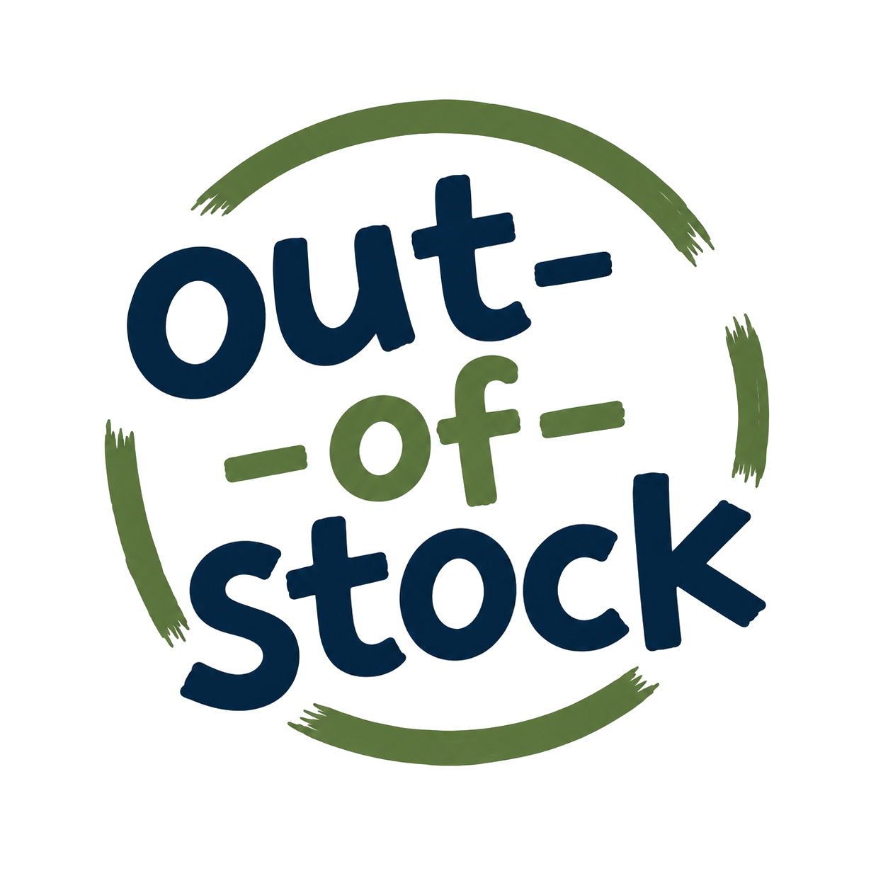

out-
-of-
stock
Leuven
binnen 25 km
Alle materialen
Spelregels
Over
Log in
Deel jullie materiaal
Materiaal lenen
rond Leuven
29 materialen van 12 verenigingen · vrij te bekijken, ook zonder account
Alles
29
Keuken
9
Tafels & banken
5
Tenten & kamp
6
Spel & sport
6
Geluid & licht
1
Varia
2
Enkel nu beschikbaar
29 materialen
Sorteer op
dichtstbij
recent bijgewerkt
naam (A-Z)
beschikbaar
Kookpotten
Wandelclub WSP
Leuven centrum · op 0,6 km
beschikbaar
Soepverwarmers en elektrische vuurtjes
Wandelclub WSP
Leuven centrum · op 0,6 km
beschikbaar
Thermossen en koffiezetters (bravilor)
Wandelclub WSP
Leuven centrum · op 0,6 km
beschikbaar
Tassen, soepkommen en theeglazen
Wandelclub WSP
Leuven centrum · op 0,6 km
beschikbaar
EHBO-koffer
Wandelclub WSP
Leuven centrum · op 0,6 km
beschikbaar
Inkledingsmateriaal
Bazart Leuven
Leuven centrum · op 0,9 km
beschikbaar
Verwarmingstoestellen
Jeugd Rode Kruis
Leuven centrum · op 1,1 km
beschikbaar
Sport- en spelmateriaal (verhuurdienst)
Sporty
Heverlee · op 2,2 km
nu uitgeleend
Slaaptenten
FOS De Vlievleger
Heverlee · op 2,5 km
beschikbaar
Sjorbalken
FOS De Vlievleger
Heverlee · op 2,5 km
nu uitgeleend
Tafels en banken
Chiro Blauwput
Kessel-Lo · op 2,6 km
beschikbaar
Tafels en stoelen (plastic, opklapbaar)
F.C. Tabor Heverlee
Heverlee · op 2,8 km
beschikbaar
Industriële friteuse en bakplaat
F.C. Tabor Heverlee
Heverlee · op 2,8 km
beschikbaar
Koffiemachine en au bain-marie
F.C. Tabor Heverlee
Heverlee · op 2,8 km
nu uitgeleend
Croquemachine
F.C. Tabor Heverlee
Heverlee · op 2,8 km
beschikbaar
Aluminium voetbaldoelen
F.C. Tabor Heverlee
Heverlee · op 2,8 km
beschikbaar
Banken
Chiro Don Bosco Kessel-Lo
Kessel-Lo · op 3,0 km
beschikbaar
Parachutes
Chiro Don Bosco Kessel-Lo
Kessel-Lo · op 3,0 km
beschikbaar
Gezelschaps- en volksspelen
Chiro Don Bosco Kessel-Lo
Kessel-Lo · op 3,0 km
beschikbaar
Rookmachine
Chiro Don Bosco Kessel-Lo
Kessel-Lo · op 3,0 km
beschikbaar
Tafels (8-10 pers.), banken en staantafels
Chiro Hekeko
Kessel-Lo · op 3,1 km
nu uitgeleend
Sjorbalken
Chiro Hekeko
Kessel-Lo · op 3,1 km
beschikbaar
Kegels
Chiro Hekeko
Kessel-Lo · op 3,1 km
beschikbaar
Tafels en banken
Scouts Egenhoven
Egenhoven · op 3,4 km
beschikbaar
BBQ
Scouts Egenhoven
Egenhoven · op 3,4 km
beschikbaar
Sjorbalken
Scouts Egenhoven
Egenhoven · op 3,4 km
beschikbaar
Paellapan
Scouts Boven-Lo
Kessel-Lo · op 3,7 km
nu uitgeleend
Slaaptenten
Damiaanscouts Wilsele-Putkapel
Wilsele · op 4,6 km
beschikbaar
Spelmateriaal
Damiaanscouts Wilsele-Putkapel
Wilsele · op 4,6 km